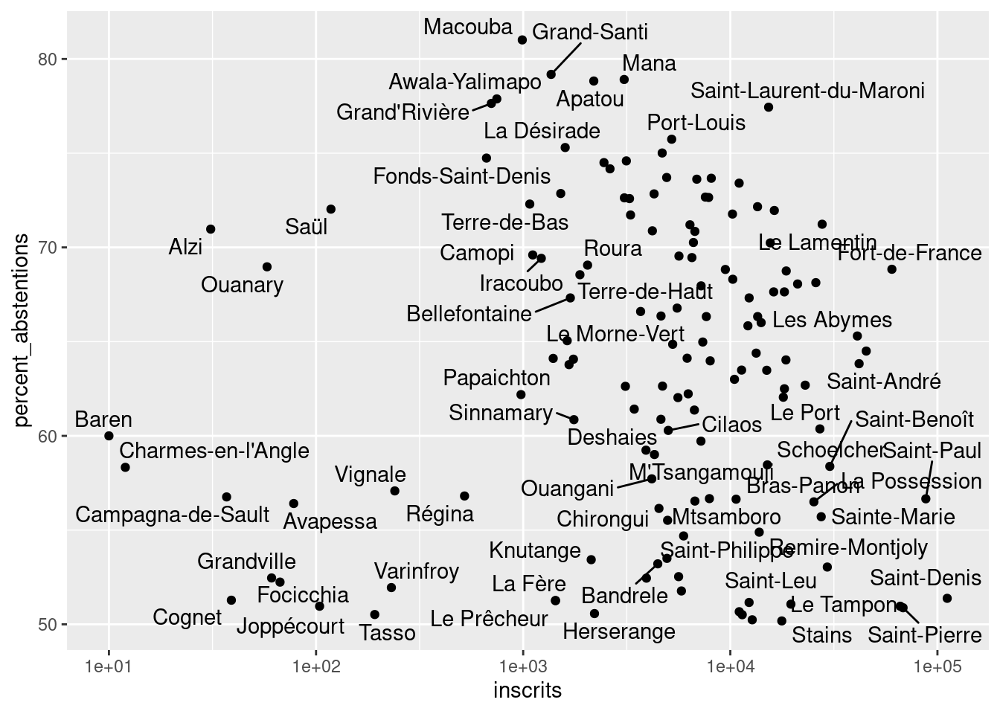

library(tidyverse)
library(sf)Élections législatives
Niveau 3
Correction complète
Préparation
Je charge uniquement les packages principaux.
Je télécharge les données directement depuis R. La fonction multi_download du package curl est adaptée au téléchargement de fichiers lourds ou multiples. La fonction de base correspondante est download.file. Je les télécharge dans le sous-dossier data de mon projet à l’aide de la fonction here::here.
curl::multi_download("https://static.data.gouv.fr/resources/elections-legislatives-des-30-juin-et-7-juillet-2024-resultats-definitifs-du-1er-tour/20240711-075030/resultats-definitifs-par-communes.xlsx",
destfiles = here::here("data", "legislatives-2024-communes.xlsx"))Le jeu de données rassemble les résultats du premier tour des élections législatives de 2024 au niveau communal.
d0 = readxl::read_excel(here::here("data", "legislatives-2024-communes.xlsx")) |>
janitor::clean_names()Recodages
Notre base de données contient autant de lignes que de communes. Et de très nombreuses variables, car le jeu de données est au format wide. Autrement dit, pour chaque commune, il y a une colonne pour chaque attribut de chaque candidat.
nrow(d0)[1] 35232ncol(d0)[1] 1854Je sélectionne les variables donnant les informations générales (nombre d’inscrits, de votants, de votes nuls, blancs, d’abstentions et pourcentages correspondants). Il s’agit des 18 premières variables, et je peux donc passer à select l’argument 1:18.
d1 = d0 |>
select(1:18)Un premier problème apparaît : les variables exprimées en pourcentage sont de type character, car elles contiennent le symbole %. Pas très pratique pour faire des calculs.
glimpse(d1)Rows: 35,232
Columns: 18
$ code_departement <dbl> 1, 1, 1, 1, 1, 1, 1, 1, 1, 1, 1, 1, 1, 1, 1,…
$ libelle_departement <chr> "Ain", "Ain", "Ain", "Ain", "Ain", "Ain", "A…
$ code_commune <dbl> 1001, 1002, 1004, 1005, 1006, 1007, 1008, 10…
$ libelle_commune <chr> "L'Abergement-Clémenciat", "L'Abergement-de-…
$ inscrits <dbl> 662, 228, 8744, 1337, 98, 2073, 568, 287, 82…
$ votants <dbl> 492, 178, 6037, 960, 68, 1530, 418, 196, 565…
$ percent_votants <chr> "74,32%", "78,07%", "69,04%", "71,80%", "69,…
$ abstentions <dbl> 170, 50, 2707, 377, 30, 543, 150, 91, 261, 6…
$ percent_abstentions <chr> "25,68%", "21,93%", "30,96%", "28,20%", "30,…
$ exprimes <dbl> 476, 171, 5890, 941, 65, 1493, 408, 191, 551…
$ percent_exprimes_inscrits <chr> "71,90%", "75,00%", "67,36%", "70,38%", "66,…
$ percent_exprimes_votants <chr> "96,75%", "96,07%", "97,57%", "98,02%", "95,…
$ blancs <dbl> 9, 6, 100, 12, 3, 23, 4, 5, 8, 8, 3, 2, 27, …
$ percent_blancs_inscrits <chr> "1,36%", "2,63%", "1,14%", "0,90%", "3,06%",…
$ percent_blancs_votants <chr> "1,83%", "3,37%", "1,66%", "1,25%", "4,41%",…
$ nuls <dbl> 7, 1, 47, 7, 0, 14, 6, 0, 6, 2, 2, 0, 11, 8,…
$ percent_nuls_inscrits <chr> "1,06%", "0,44%", "0,54%", "0,52%", "0,00%",…
$ percent_nuls_votants <chr> "1,42%", "0,56%", "0,78%", "0,73%", "0,00%",…On va donc convertir toutes ces variables au format numeric. Ce serait fastidieux de le faire pour chacune d’entre elle, on utilise donc la fonction across.
Astuce
Testez la fonction parse_number sur des chaînes de caractères contenant des nombres et regardez le résultat.
d2 = d1 |>
mutate(
across(
starts_with("percent_"),
~parse_number(.x, locale = locale(decimal_mark = ","))
)
)Inspection
La fonction skim du package skimr permet d’inspecter rapidement les différentes variables du jeu de données. C’est très utile pour détecter des problèmes. En l’occurrence, si l’on cherche uniquement d’éventuelles valeurs manquantes introduites lors des opérations précédentes, on peut utiliser la fonction suivante :
questionr::freq.na(d2) missing %
code_departement 575 2
code_commune 575 2
libelle_departement 0 0
libelle_commune 0 0
inscrits 0 0
votants 0 0
percent_votants 0 0
abstentions 0 0
percent_abstentions 0 0
exprimes 0 0
percent_exprimes_inscrits 0 0
percent_exprimes_votants 0 0
blancs 0 0
percent_blancs_inscrits 0 0
percent_blancs_votants 0 0
nuls 0 0
percent_nuls_inscrits 0 0
percent_nuls_votants 0 0On constate que nos opérations sur les variables en pourcentage se sont bien déroulées, elles n’ont pas introduit de non-réponse. Par contre, il y a visiblement un problème avec deux autres variables. Isolons les lignes qui contiennent une valeur manquante pour code_commune et code_departement. Il s’avèrent que ce sont toutes des (et toutes les) communes corses.
d2 |>
filter(is.na(code_commune))# A tibble: 575 × 18
code_departement libelle_departement code_commune libelle_commune inscrits
<dbl> <chr> <dbl> <chr> <dbl>
1 NA Corse-du-Sud NA Afa 2684
2 NA Corse-du-Sud NA Ajaccio 37185
3 NA Corse-du-Sud NA Alata 2919
4 NA Corse-du-Sud NA Albitreccia 1414
5 NA Corse-du-Sud NA Altagène 82
6 NA Corse-du-Sud NA Ambiegna 76
7 NA Corse-du-Sud NA Appietto 1483
8 NA Corse-du-Sud NA Arbellara 156
9 NA Corse-du-Sud NA Arbori 85
10 NA Corse-du-Sud NA Argiusta-Moriccio 101
# ℹ 565 more rows
# ℹ 13 more variables: votants <dbl>, percent_votants <dbl>, abstentions <dbl>,
# percent_abstentions <dbl>, exprimes <dbl>, percent_exprimes_inscrits <dbl>,
# percent_exprimes_votants <dbl>, blancs <dbl>,
# percent_blancs_inscrits <dbl>, percent_blancs_votants <dbl>, nuls <dbl>,
# percent_nuls_inscrits <dbl>, percent_nuls_votants <dbl>
Problème classique à l’importation
Pour gagner du temps, les fonctions dédiées à l’importation, comme readxl::read_excel ou readr::read_csv essaient de deviner le type des variables à partir des premières lignes qu’elles lisent. Par défaut, il s’agit des 1000 premières lignes. La plupart du temps, cela fonctionne. Mais avec les codes des communes, il y a très souvent un problème. Les 1000 premiers codes sont numériques, donc read_excel assigne à la variable code_commune le type numeric. Arrivée en Corse, la fonction rencontre des codes qui contiennent les symboles “A” et “B”. Impossible de les lire comme numeric, par conséquent ces valeurs se verront assigner la valeur NA (pour Not Available). Deux solutions existent : soit expliciter le type des variables, soit augmenter le nombre de lignes que la fonction doit lire avant de déterminer le type des variables. Comme la base de données est relativement petite, on peut ici choisir la seconde option, qui correspond à l’argument guess_max de read_excel.
Rectifier
On reprend ici les étapes précédentes, sauf qu’on réalise correctement l’importation.
legislatives_2024_t1 = readxl::read_excel(here::here("data", "legislatives-2024-communes.xlsx"),
guess_max = 35000) |>
janitor::clean_names() |>
select(1:18) |>
mutate(
across(
starts_with("percent_"),
~parse_number(.x, locale = locale(decimal_mark = ","))
))Couche géographique
À l’aide du package CARTElette, on télécharge les contours des communes pour l’année 2024 dans un sous-dossier data de notre projet.
Mise en garde
Ce ligne de code n’est évidemment à exécuter qu’une seule fois. N’oubliez pas de la commenter (#) pour ne pas télécharger les données à chaque fois que vous relancez votre script.
CARTElette::charger_carte(destfile = here::here("data"),
COG = 2024,
nivsupra = "COM")Importons cette couche géographique. Puis sélectionnons les variables correspondant au code de la commune et du département, au nom de la commune et à sa population. Trions les observations par code géographique croissant.
communes_sf = st_read(here::here("data", "COM_2024_CARTElette.shp"), quiet = TRUE) |>
janitor::clean_names() |>
select(insee_dep, insee_com, nom, population) |>
rename(code_commune = insee_com) |>
arrange(code_commune)Jointure
L’objectif est de réaliser une jointure entre le dataframe des résultats électoraux, et le dataframe/objet sf contenant les contours des communes, afin de pouvoir cartographier les résultats.
La meilleure candidate pour le rôle de clef commune aux deux dataframe semble être la variable code_commune. Seulement, deux observations montrent que cela ne sera seulement pas si simple.
- D’abord, le dataframe commune_sf contient 34935 lignes et le dataframe électoral 35232 lignes.
- Ensuite, les deux variables ne sont pas strictement codées de la même façon. Comparez le code de L’Abergement-Clémenciat dans les deux dataframes par exemple.
On va d’abord recoder code_commune de manière à ce qu’elle soit absolument identique dans les deux dataframes, pour deux communes identiques.
Ajouter un zéro
Pour cela, il faut ajouter un zéro devant les codes du dataframe électoral qui ne contiennent que 4 chiffres, de manière à ce que, par exemple, 1001 devienne 01001. Pour cela, on utilise, à l’intérieur de la fonction mutate qui nous permet de recoder une variable, 3 fonctions : - if_else permet de faire du recodage conditionnel. - stringr::str_length donne la longueur d’une chaîne de caractères. - paste0 permet de “coller” (sans espace) deux chaînes de caractères ensemble.
legislatives_clean = legislatives_2024_t1 |>
mutate(code_commune = if_else(str_length(code_commune) < 5,
paste0("0", code_commune),
code_commune))Maintenant que la variable code_commune est rigoureusement identique dans les deux dataframes, identifions les observations (les communes) éventuellement présentes dans l’un, mais pas dans l’autre, à l’aide de la fonction anti_join.
D’abord, les communes qui sont dans notre fichier électoral, mais pas dans notre fichier cartographique. À part une poignée de communes métropolitaines qui ont dû apparaître (fusionner) dans l’intervalle entre la publication du COG 2024 et les législatives, il s’agit de communes des collectivités d’outre-mer et des communes où sont inscrits des Français de l’étranger.
anti_join(legislatives_clean, communes_sf)Joining with `by = join_by(code_commune)`# A tibble: 303 × 18
code_departement libelle_departement code_commune libelle_commune inscrits
<chr> <chr> <chr> <chr> <dbl>
1 2 Aisne 02899 Cormicy 31
2 14 Calvados 14513 Tessy-Bocage 356
3 44 Loire-Atlantique 44060 Ingrandes-le-F… 749
4 49 Maine-et-Loire 49144 Vallons-de-l'E… 811
5 975 Saint-Pierre-et-Mique… 97501 Miquelon-Langl… 503
6 975 Saint-Pierre-et-Mique… 97502 Saint-Pierre 4566
7 986 Wallis et Futuna 98601 Wallis-Et-Futu… 9031
8 987 Polynésie française 98711 Anaa 756
9 987 Polynésie française 98712 Arue 7183
10 987 Polynésie française 98713 Arutua 1555
# ℹ 293 more rows
# ℹ 13 more variables: votants <dbl>, percent_votants <dbl>, abstentions <dbl>,
# percent_abstentions <dbl>, exprimes <dbl>, percent_exprimes_inscrits <dbl>,
# percent_exprimes_votants <dbl>, blancs <dbl>,
# percent_blancs_inscrits <dbl>, percent_blancs_votants <dbl>, nuls <dbl>,
# percent_nuls_inscrits <dbl>, percent_nuls_votants <dbl>Ensuite, les communes qui sont dans notre fichier géographique, mais pas dans notre fichier électoral. Qu’est-ce que ces communes ont de spécial ? Elles n’ont, tout simplement, pas d’habitants, mais sont conservées comme lieux de mémoire de la Première Guerre Mondiale. Voir ces deux articles de Wikipédia :
browseURL("https://fr.wikipedia.org/wiki/Zone_rouge_(s%C3%A9quelles_de_guerre)#Contexte_historique")
browseURL("https://fr.wikipedia.org/wiki/Villages_fran%C3%A7ais_d%C3%A9truits_durant_la_Premi%C3%A8re_Guerre_mondiale")anti_join(communes_sf, legislatives_clean)Joining with `by = join_by(code_commune)`Simple feature collection with 6 features and 4 fields
Geometry type: MULTIPOLYGON
Dimension: XY
Bounding box: xmin: 5.226186 ymin: 49.17395 xmax: 5.508628 ymax: 49.30143
Geodetic CRS: WGS 84
insee_dep code_commune nom population
1 55 55039 Beaumont-en-Verdunois 0
2 55 55050 Bezonvaux 0
3 55 55139 Cumières-le-Mort-Homme 0
4 55 55189 Fleury-devant-Douaumont 0
5 55 55239 Haumont-près-Samogneux 0
6 55 55307 Louvemont-Côte-du-Poivre 0
geometry
1 MULTIPOLYGON (((5.412556 49...
2 MULTIPOLYGON (((5.47882 49....
3 MULTIPOLYGON (((5.226186 49...
4 MULTIPOLYGON (((5.462869 49...
5 MULTIPOLYGON (((5.37961 49....
6 MULTIPOLYGON (((5.371649 49...Ces points éclaircis, réalisons la jointure à l’aide de la fonction left_join.
legislatives_sf = left_join(communes_sf, legislatives_clean)Joining with `by = join_by(code_commune)`Distribution de l’abstention
Vous désirez étudier le pourcentage d’abstention par commune.
La fonction summary donne une première idée de la distribution de cette variable.
summary(legislatives_sf$percent_abstentions) Min. 1st Qu. Median Mean 3rd Qu. Max. NA's
0.00 23.60 27.41 27.61 31.36 81.01 6 Vous aurez remarqué que dans la ligne de code précédente, comme dans celle qui vont suivre, on utilise le dataframe legislatives_sf. Cela se justifie parce qu’on est en train de faire des analyses préparatoires à la cartographie. Mais cela veut dire qu’on a délibérément mis de côté toutes les communes des collectivités d’outre-mer, ainsi que celles où ont sont inscrits des Français de l’étranger.
Représentons graphiquement cette distribution.
ggplot(legislatives_sf) +
geom_histogram(aes(x = percent_abstentions),
bins = 100,
fill = "red")Warning: Removed 6 rows containing non-finite outside the scale range
(`stat_bin()`).
Astuce
N’oubliez pas de jouer sur l’argument bins de la fonction geom_histogram.
La distribution de notre variable ressemble beaucoup à une loi normale. Il y a quand même un certain nombre de valeurs extrêmes. Plusieurs communes ont des pourcentages d’abstention compris entre 50 et 100. Comparons le nombre d’inscrits au pourcentage d’abstention, pour savoir si cela est lié à la petite taille de certaines communes.
ggplot(legislatives_sf) +
geom_point(aes(x = inscrits,
y = percent_abstentions))Warning: Removed 6 rows containing missing values or values outside the scale range
(`geom_point()`).
Le logarithme à la rescousse
C’est totalement illisible, parce qu’il y a des communes beaucoup plus peuplées que d’autres. Dans ce cas, on peut utiliser une échelle logarithmique pour la variable qui pose problème. Et par la même occasion “zoomer” sur les communes où plus d’un électeur sur deux s’est abstenu et les labelliser.
communes_abstentionnistes = legislatives_sf |>
filter(percent_abstentions > 50)
nrow(communes_abstentionnistes)[1] 139communes_abstentionnistes |>
ggplot(aes(x = inscrits,
y = percent_abstentions)) +
geom_point() +
ggrepel::geom_text_repel(aes(label = libelle_commune)) +
scale_x_log10()Warning: ggrepel: 76 unlabeled data points (too many overlaps). Consider
increasing max.overlaps
On constate que l’essentiel de ces communes très abstentionnistes appartiennent aux départements d’outre-mer.
Discrétisation
Il serait bon que la discrétisation choisie reflète ce résultat, et permette de souligner la situation spécifique des commune des départements d’outre-mer. Malgré la distribution presque normale, une discrétisation utilisant l’écart-type, de manière symétrique autour de la moyenne, n’est peut-être donc pas la plus adaptée.
On choisit donc une discrétisation capable de mettre en évidence cette longue “queue” de nos données, en l’occurence la discrétisation de style “boxplot”, qui offre un bon compromis entre équilibre et détail. Vous pouvez en tester d’autres, par exemple le style “sd” ou “headtails”, en utilisant la même syntaxe.
sd = classInt::classIntervals(
legislatives_sf$percent_abstentions,
n = 4,
style = "sd")Warning in classInt::classIntervals(legislatives_sf$percent_abstentions, : var
has missing values, omitted in finding classessd$brks[1] -5.15055 27.61240 60.37535 93.13831box = classInt::classIntervals(
legislatives_sf$percent_abstentions,
style = "box")Warning in classInt::classIntervals(legislatives_sf$percent_abstentions, : var
has missing values, omitted in finding classesCartographie
ggplot(legislatives_sf,
aes(fill = percent_abstentions)) +
geom_sf(color = NA) +
scale_fill_viridis_b(breaks = box$brks,
labels = round) +
labs(title = "Abstention",
subtitle = "Au premier tour des élections législatives de 2024",
fill = "%",
caption = "Source : Ministère de l'Intérieur") +
theme_void() +
theme(text = element_text(family = "Arial Narrow"))